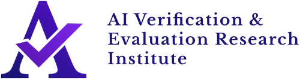

What makes us who we are
The Guest Register
CHAIN convenes exclusive, members-only conversations with the researchers, policymakers and executives shaping artificial intelligence today. These are the sessions we are proudest to have hosted.



-
Google DeepMind · University of Edinburgh
David Abel
An exclusive talk with the Google DeepMind researcher and University of Edinburgh Honorary Fellow, in conversation with CHAIN members.
View the recap on LinkedIn -
OpenAI, 2018–2024
Miles Brundage
An exclusive Q&A for CHAIN with the former Research Scientist, Head of Policy Research, and Senior Advisor for AGI Readiness at OpenAI.
View the recap on LinkedIn -
Microsoft · Hispanic South America
Martín Sciarrillo
An exclusive workshop for CHAIN with the Director of Data & AI, on career development and Microsoft's AI safety initiatives.
View the recap on LinkedIn -
Stephen Clare
A seminar for CHAIN by GovAI's Research Manager, exploring the frontiers of AI governance research.
View the announcement on LinkedIn -
A Session with AVERI
CHAIN welcomed AVERI to share their work on making frontier AI auditing effective and universal.
-
A Session with Arcadia Impact
CHAIN welcomed Arcadia Impact to discuss empirical AI alignment research and pathways into AI safety careers.
-
In-Person Summit & Team Building
CHAIN members gathered at UCL for a full-day summit -- the network's first in-person meeting.